<!DOCTYPE html>
<html lang="en">
<head>
  <meta charset="utf-8" />
  <meta http-equiv="X-UA-Compatible" content="IE=edge" />
  <meta name="HandheldFriendly" content="True" />
  <meta name="viewport" content="width=device-width, initial-scale=1.0" />
    <meta name="robots" content="" />

  <link href="https://fonts.googleapis.com/css?family=Source+Code+Pro|Source+Sans+Pro:300,400,400i,700" rel="stylesheet">

    <link rel="stylesheet" type="text/css" href="https://note.koko.guru/theme/stylesheet/style.min.css">

  <link rel="stylesheet" type="text/css" href="https://note.koko.guru/theme/pygments/github.min.css">
  <link rel="stylesheet" type="text/css" href="https://note.koko.guru/theme/font-awesome/css/fontawesome.css">
  <link rel="stylesheet" type="text/css" href="https://note.koko.guru/theme/font-awesome/css/brands.css">
  <link rel="stylesheet" type="text/css" href="https://note.koko.guru/theme/font-awesome/css/solid.css">

    <link href="https://note.koko.guru/static/custom-style.css" rel="stylesheet">


    <link rel="shortcut icon" href="/static/favicon.ico" type="image/x-icon">
    <link rel="icon" href="/static/favicon.ico" type="image/x-icon">


<meta name="author" content="kokokuo" />
<meta name="description" content="在前一篇 在 Mac 上使用 Python 的 Pelican 建立靜態個人網誌 中介紹了如何在本機端，安裝 Pelican 並建立自己的個人網誌，但是這個網誌卻只能在自己的電腦中呈現，並沒有放到網路上，因為我們缺少了可以存放 Pelican 網誌的伺服器。" />
<meta name="keywords" content="Python, Pelican, Github, Static Site">

<meta property="og:site_name" content="koko's Note"/>
<meta property="og:title" content="使用 Github Page 作為靜態網誌的空間 - 以 Pelican 為例"/>
<meta property="og:description" content="在前一篇 在 Mac 上使用 Python 的 Pelican 建立靜態個人網誌 中介紹了如何在本機端，安裝 Pelican 並建立自己的個人網誌，但是這個網誌卻只能在自己的電腦中呈現，並沒有放到網路上，因為我們缺少了可以存放 Pelican 網誌的伺服器。"/>
<meta property="og:locale" content="en_US"/>
<meta property="og:url" content="https://note.koko.guru/posts/deploy-pelican-static-webiste-to-github-page"/>
<meta property="og:type" content="article"/>
<meta property="article:published_time" content="2019-02-05 00:00:00+08:00"/>
<meta property="article:modified_time" content=""/>
<meta property="article:author" content="https://note.koko.guru/author/kokokuo.html">
<meta property="article:section" content="Github"/>
<meta property="article:tag" content="Python"/>
<meta property="article:tag" content="Pelican"/>
<meta property="article:tag" content="Github"/>
<meta property="article:tag" content="Static Site"/>
<meta property="og:image" content="/static/koko-logo.png">

  <title>koko's Note &ndash; 使用 Github Page 作為靜態網誌的空間 - 以 Pelican 為例</title>

</head>
<body>
  <aside>
    <div>
      <a href="https://note.koko.guru">
        
      </a>
      <h1><a href="https://note.koko.guru">koko's Note</a></h1>

<p>
Code / Web / Architecture
<br/>
<br/>
你需要非常多的努力
<br/>
才能看起來毫不費力
</p>
<section id=sidebar_tags>
  <dl>
      <dt><a href='https://note.koko.guru/tag/python'>Python (20)</a></dt>
      <dt><a href='https://note.koko.guru/tag/mac'>Mac (13)</a></dt>
      <dt><a href='https://note.koko.guru/tag/pelican'>Pelican (6)</a></dt>
      <dt><a href='https://note.koko.guru/tag/sublime'>Sublime (4)</a></dt>
      <dt><a href='https://note.koko.guru/tag/github'>Github (3)</a></dt>
      <dt><a href='https://note.koko.guru/tag/python3'>Python3 (3)</a></dt>
      <dt><a href='https://note.koko.guru/tag/static-site'>Static Site (3)</a></dt>
      <dt><a href='https://note.koko.guru/tag/pyqt'>PyQt (3)</a></dt>
      <dt><a href='https://note.koko.guru/tag/python2'>Python2 (2)</a></dt>
      <dt><a href='https://note.koko.guru/tag/pipenv'>Pipenv (2)</a></dt>
      <dt><a href='https://note.koko.guru/tag/jsp'>JSP (2)</a></dt>
    <dt><a id="tags_mores" href='https://note.koko.guru/tags.html'>...more</a></dt>
  </dl>
</section>

      <nav>
        <ul class="list">

        </ul>
      </nav>

      <ul class="social">
          <li>
            <a  class="sc-github" href="https://github.com/kokokuo" target="_blank">
            <i class="fab fa-github">
            </i>
          </a></li>
          <li>
            <a  class="sc-linkedin" href="https://www.linkedin.com/in/easonkuo" target="_blank">
            <i class="fab fa-linkedin">
            </i>
          </a></li>
      </ul>
    </div>


  </aside>
  <main>

    <nav>
      <a href="https://note.koko.guru">    Home
</a>

      <a href="/pages/about.html">關於我</a>
      <a href="/archives.html">文章列表</a>
      <a href="/pages/software-development.html">軟體開發</a>
      <a href="/pages/financial-investment.html">理財投資</a>


    </nav>

<article class="single">
  <header>
      
    <h1 id="deploy-pelican-static-webiste-to-github-page">使用 Github Page 作為靜態網誌的空間 - 以 Pelican 為例</h1>
    <p>
          Posted on Tue 05 February 2019 in <a href="https://note.koko.guru/category/github.html">Github</a>


    </p>
  </header>


  <div>
    <p>這篇我們特別記錄了使用 Pelican 靜態網站時，如何部署到 Github Page 的過程，因為只要把檔案上傳即可，並且還不用花費任何半毛錢，接著我們就來了解。</p>
<h1>前言</h1>
<hr>
<p>在前一篇 <a href="https://note.koko.guru/posts/mac-using-pelican-build-static-website">在 Mac 上使用 Python 的 Pelican 建立靜態個人網誌</a> 中介紹了如何在本機端，安裝 Pelican 並建立自己的個人網誌，但是這個網誌卻只能在自己的電腦中呈現，並沒有放到網路上，因為我們缺少了可以存放 Pelican 網誌的伺服器。</p>
<p>不過因為靜態網站只有 HTML/CSS/JS 這類單純的檔案結構，需要建置資料庫，也沒有後端的語言因此可以選擇架設的選擇性也比較多樣，因為只需要一個空間與簡單的伺服器軟體即可，所以我們可以架設一台自己的伺服器電腦透過 SSH 或 FTP 上傳，又或是使用 Dropbox 空間，雲端 AWS 與 Google Cloud, Azure 提供的服務。</p>
<p>但是上述中，要自己架設主機花時間也需要一些專業知識，使用 Dropbox、雲端服務的空間或多或少會需要收取一些費用，如果我們希望簡單又能夠不花費的話，要怎麼辦呢？</p>
<p>因此這裡我們就要選擇 <strong>Github Page</strong> ，因為只要把檔案上傳即可，並且還不用花費任何半毛錢，以及因為 <strong>Github Page</strong> 是 <strong>Github</strong> 的服務之一，因此支援版本控制系統，簡單來說就是能夠幫你記錄每一次上傳更新的所有紀錄，能方便你還原上一版。</p>
<p>而這篇我們特別記錄了使用 Pelican 靜態網站時，如何部署到 Github Page 的過程。</p>
<h1>一、創建一個 Github Page 的倉儲庫 (Repository)</h1>
<p>首先我們需要在 Github 建立一個 Github Page 用的 Repository ，第一次使用 Github 的朋友可以先去註冊一個。</p>
<p>這個 Github Page 用的 Repository 會專門用來放置的靜態網誌的檔：</p>
<p>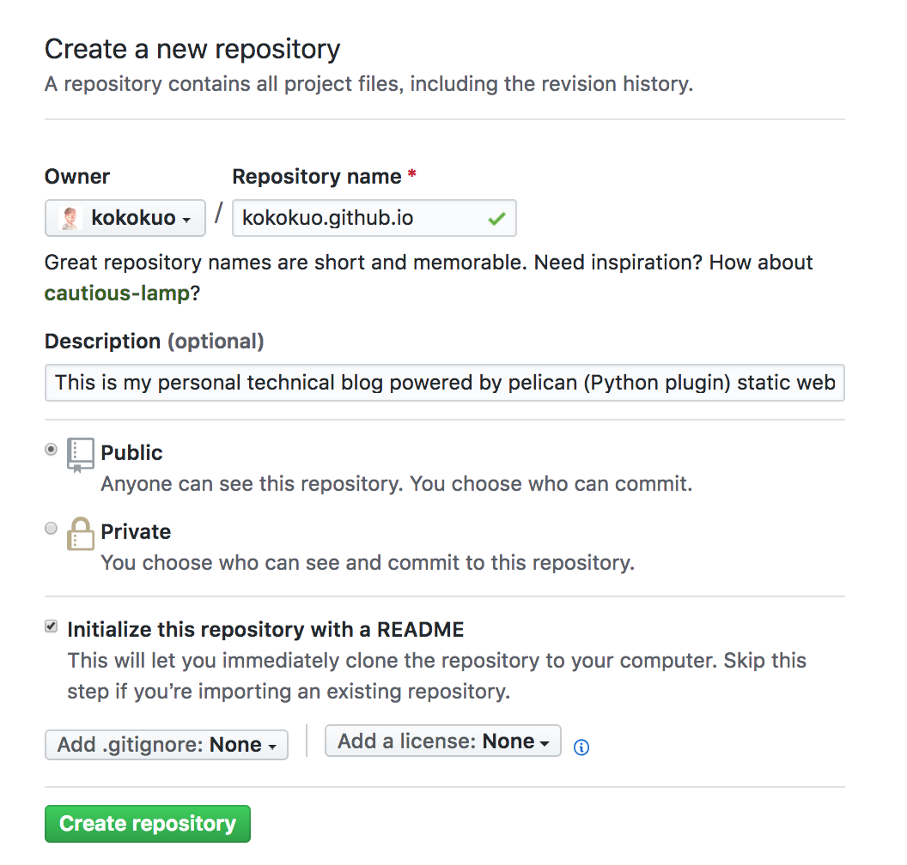</p>
<p>需要特別注意的部分是，我們的 Repository 名稱需要照個 Github Page 的教學指示，建立一個格式為 username.github.io 的名稱，而這個 <code>username</code> 必須是你的 Github 使用者名稱，如此 Github Page 才會知道你要建立屬於自己的個人網站並且作用，例如我的名稱是 <code>kokokuo</code> 所以我建立的 Repository 名稱為 <code>kokokuo.github.io</code>，如果不照著此方式，是無法作用建立的。</p>
<p>而 Repository 的權限、 <code>README</code> 與 <code>.gitignore</code>，看個人需要，例如我設定為 Public，定且有 README 與 Python 的 .gitnore (因為使用 Pelican)。</p>
<p>建立完後，你的 Repository 會如此畫面：</p>
<p>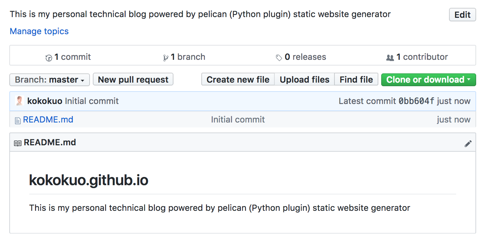</p>
<p><em>附註：因為我有使用 README，Github Repository 的 README 會把剛剛建立時輸入的 Description 直接自動填上。</em></p>
<p>完成後這個網站便可以馬上作用囉，只要在網址上輸入你建立的 <code>username.github.io</code> 名稱，例如我是 <code>kokokuo.github.io</code>，則輸入 https://kokokuo.github.io，就會看到這個 Github Page 的網站呈現了我剛剛建立的 <code>README</code> 內容。</p>
<p></p>
<p><br/></p>
<h1>二、 Git 版管與 Repository 來源設定</h1>
<p>再來就是第二部步驟，上傳檔案，而 Github 提供了兩種方式，第一種是透過 <strong>終端機(Terminal)</strong> 下指令，另外一種是下載他們提供的工具 <strong>Github Desktop</strong>，以視窗介面的形式上傳。</p>
<p>不過在操作上，由於 Pelican 有提供一些指令的部署工具，因此在此部分我們統一使用 Terminal 以指令的方式操作。</p>
<p>開始之前我們先確認是否有進到靜態網誌的專案目錄下，並且透過 Pipenv 或 Virtualenv 進入到虛擬環境下（這裡以 Pipenv 為例子），同時確認是否有執行或把 <strong>output</strong> 目錄中的 HTML 檔更新到最新，如果沒有則再次執行 <code>make html</code>：</p>
<div class="highlight"><pre><span></span><code>&gt; <span class="nb">cd</span> kokokuo-note
kokokuo-note&gt; pipenv shell
<span class="o">(</span>kokokuo-note<span class="o">)</span>kokokuo-note&gt; make html
</code></pre></div>

<h2>1. 安裝 Git 指令工具</h2>
<p>首先我們要安裝 Git 指令工具，由於本人使用的是 Mac ，所以我們採用 <strong>Homebrew</strong> 下載，不曉得 Homebrew 的人可以看一下我的這篇文章 <a href="https://note.koko.guru/posts/mac-install-homebrew">Homebrew (1) - Mac 上安裝 Homebrew 套件管理工具</a></p>
<div class="highlight"><pre><span></span><code>&gt; brew install git
</code></pre></div>

<h2>2. 設定 Github Page Repository 的來源位置至 Git 中</h2>
<p>再來我們要把在 Github 上我們剛建立好的 Github Page Repository 與我們的 Pelican 網誌做一個繫結。</p>
<p>首先點選建立的 Repository 的 <strong>Clone or Download</strong>，並複製顯示的 URL:</p>
<p>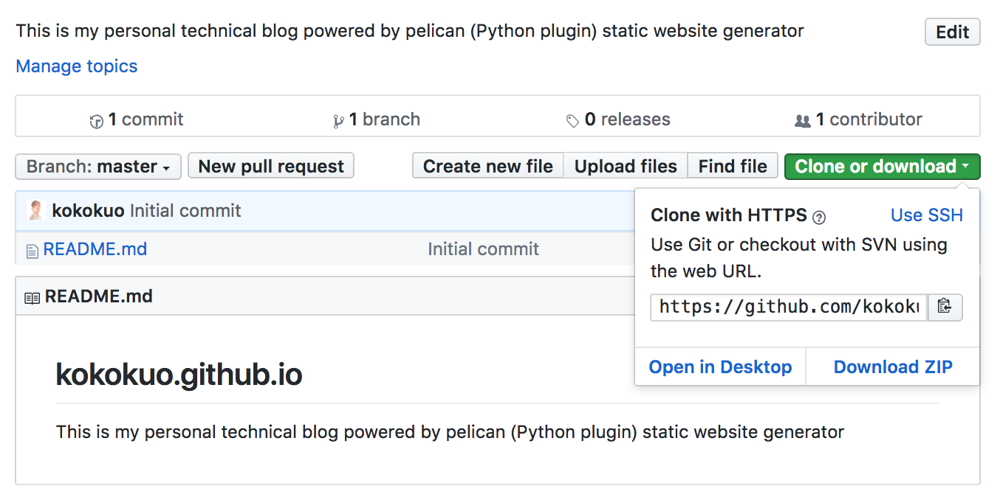</p>
<p>回到 Terminal 下，輸入以下指令，先在自己的 Pelican 網誌目錄下透過 <code>git init</code> 建立 Git 版本控管功能，Git 會預設幫我們建立一個 <code>master</code> 分支並在此分支下工作。</p>
<p>之後把剛剛的 URL 透過 <code>git remote add origin</code> 把網誌專案與 Repository 完成繫結：</p>
<div class="highlight"><pre><span></span><code><span class="o">(</span>kokokuo-note<span class="o">)</span>kokokuo-note&gt; git init
<span class="o">(</span>kokokuo-note<span class="o">)</span>kokokuo-note<span class="o">(</span>master<span class="o">)</span>&gt; git remote add origin https://github.com/kokokuo/kokokuo.github.io.git
<span class="o">(</span>kokokuo-note<span class="o">)</span>kokokuo-note<span class="o">(</span>master<span class="o">)</span>&gt; git status <span class="c1"># 確認是否有新增修改編輯刪除的檔案動作還沒被提交</span>
</code></pre></div>

<p>如下圖，其中我們透過 <code>git status</code> 確認是否 <code>git init</code> 有無作用，或是來確認此次的變動修改有哪些檔案： </p>
<p>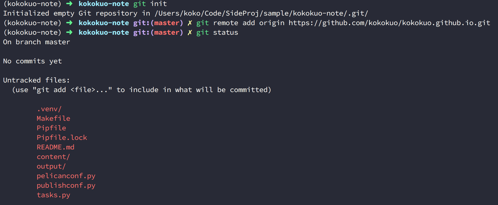</p>
<p>完成上述步驟，這個網誌目錄就與剛剛建立的 Github Repository 有了一個聯繫，之後我們便可以開始把整個 <strong>kokokuo</strong> 目錄透過 Git 提交儲存，再提交之前，我們先在專案目錄下建立一個 <code>.gitignore</code> 檔案並填入以下來榮。透過這個 <code>.gitignore</code> 檔案來過濾掉一些不必要上傳的檔案：</p>
<div class="highlight"><pre><span></span><code><span class="c1"># 過濾掉 Mac 的 DS_Store</span>
.DS_Store

<span class="c1"># 過濾掉 VSCode 的設定檔案</span>
.vscode/*

<span class="c1"># 過濾 Pipenv 的虛擬環境</span>
.venv/
</code></pre></div>

<p>完成上述的 <code>.gitignore</code> 後便可以開始透過以下指令步驟提交，可以發現再次下 <code>git status</code> 時，我們原本的 <code>.venv</code> 這個目錄消失了，因為我們把它也放在 <code>.gitignore</code> 中讓此目錄不需要被提交存擋：</p>
<p>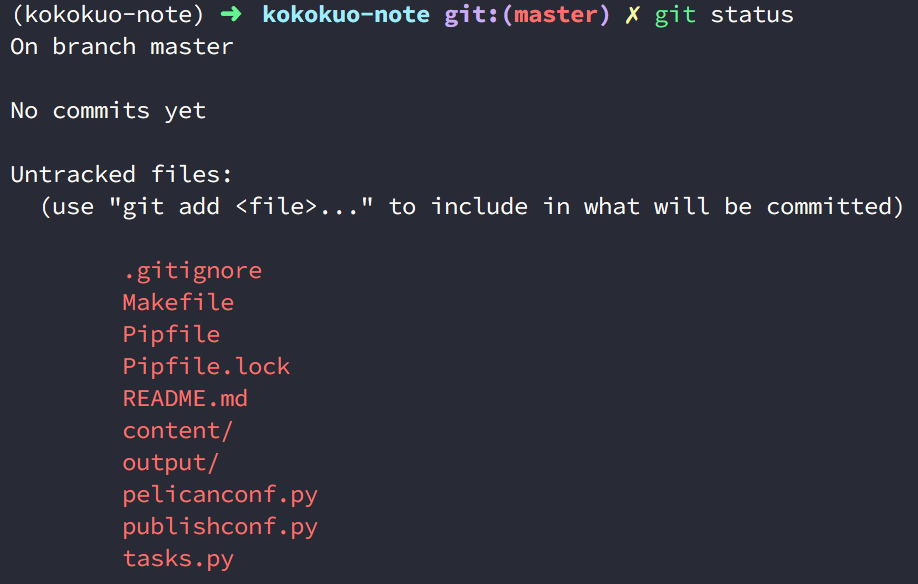</p>
<p>再來我們要設定 <code>git config</code>，因為需要告訴 Git 這個提交的作者是誰，才能追朔後續的歷史紀錄與變動，因此如果沒有設定，後半段的 Commit 也無法成功。</p>
<p>另外如果這個作者的信箱有註冊在 Github 中，那麼後續上傳到 Github 上時也能看到這個使用者。</p>
<div class="highlight"><pre><span></span><code><span class="o">(</span>kokokuo-note<span class="o">)</span>kokokuo-note<span class="o">(</span>master<span class="o">)</span>&gt; git config <span class="nb">local</span> --email <span class="s2">&quot;你註冊的 Github 信箱&quot;</span>
<span class="o">(</span>kokokuo-note<span class="o">)</span>kokokuo-note<span class="o">(</span>master<span class="o">)</span>&gt; git config <span class="nb">local</span> --name <span class="s2">&quot;你註冊的 Github 用戶名稱 Username&quot;</span>
</code></pre></div>

<p>接下來我們就要接著提交，並且發布上傳到 Github Page 上。</p>
<p><br/></p>
<h1>三、Github Page 發布的分支設定</h1>
<p>之所以我們的 Github Page 能顯示 <code>README</code> 檔案的內容，是因為 Github Page Repository 預設會去尋找 <code>master</code> 或 <code>gh-pages</code> 分支底下的 <code>index.html</code> 檔案，作為 https://username.github.io 呈現的內容。</p>
<p>不過對於個用戶或組織的帳戶建立的 Github Page 網頁，只能在 <code>master</code> 分支生效 (e.g: <code>username.github.io</code> 這種格式），而 <code>gh-pages</code>，則針對在程式碼專案所使用的 Github Page，讓每個 Github 上的 Git Repository 專案都可以分別透過 <code>gh-pages</code> 分支建立各自的 Github Page (不過網址仍會以  https://username.github.io 為主)</p>
<p>另外若是都沒有 <code>index.html</code> 的話，則會優先顯示 <code>README</code> 這個檔案的內容。</p>
<p>而在此篇我們介紹個人用戶的靜態網站，所以會以 <code>master</code> 為主，至於專案用的 <code>gh-pages</code> 以後會再介紹。</p>
<h2>使用 master 作為發布分支的設定</h2>
<p>由於 Pelican 產生出來的 HTML/CSS 這些靜態檔案是放在 <strong>output</strong> 目錄中的，因此如果整個 Pelican 專案上傳到預設的 <code>master</code> 分支 時，因為靜態檔案被放在 <strong>output</strong> ，所以會無法讀取顯示成功。</p>
<p>因此我們需要把這些 <strong>output</strong> 中的靜態檔案放到 <code>master</code> 中，而原本包含了 <strong>content</strong> 目錄、Makefile 與 pelicanconf.py 等的這些建立 Pelican 檔案時的來源檔案，我們要放到另外一個分支作為網存與記錄用。</p>
<p>在這邊我們會以 <code>develop</code> 作為我們 Pelican 靜態網站的來源檔案：</p>
<h3>(1.) 建立 Pelican 來源檔案變動與保存的分支 - 以 <code>develop</code> 分支為例</h3>
<p>首先透過 <code>git checkout -b</code> 建立 <code>develop</code> 分支：</p>
<div class="highlight"><pre><span></span><code><span class="o">(</span>kokokuo-note<span class="o">)</span>kokokuo-note<span class="o">(</span>master<span class="o">)</span>&gt; git checkout -b develop <span class="c1"># 建立一個新的分支 develop，並把現在的檔案都遷移到此分支下。</span>
<span class="o">(</span>kokokuo-note<span class="o">)</span>kokokuo-note<span class="o">(</span>develop<span class="o">)</span>&gt; git status # 查看現在狀態
</code></pre></div>

<p>如下圖會看到我們已經搬移到 <code>develop</code> 中了：</p>
<p>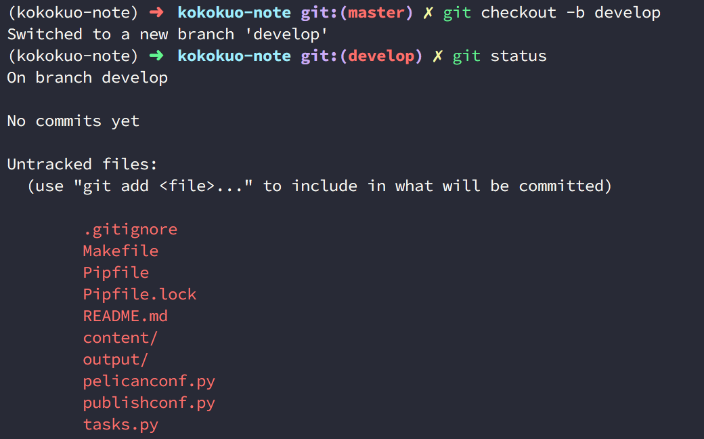</p>
<p>再來我們要把這些檔案 Commit 到此 <code>develop</code> 分支上：</p>
<div class="highlight"><pre><span></span><code><span class="o">(</span>kokokuo-note<span class="o">)</span>kokokuo-note<span class="o">(</span>develop<span class="o">)</span>&gt; git add . <span class="c1"># 告訴 Git 這個目錄下所有的檔案將要被上傳到 Repository 上</span>
<span class="o">(</span>kokokuo-note<span class="o">)</span>kokokuo-note<span class="o">(</span>develop<span class="o">)</span>&gt; git commit -m <span class="s2">&quot;生成所有 Pelican 網誌的檔案&quot;</span> <span class="c1"># 準備提交所有的編輯動作完成存擋，透過 -m 給予此次提交的訊息內容</span>
</code></pre></div>

<p>提交完後，上傳這個 <code>develop</code> 分支與存檔到 Repository 上，來保存我們的來源內容：</p>
<div class="highlight"><pre><span></span><code><span class="o">(</span>kokokuo-note<span class="o">)</span>kokokuo-note<span class="o">(</span>develop<span class="o">)</span>&gt; git push origin develop
</code></pre></div>

<h3>(2.) 使用 <code>make github</code> 指令把 output 靜態檔案上傳到 <code>master</code></h3>
<p>當我們建立了 develop 分支並提交到 Repository 保存好我們的 Pelican 專案來源檔案後，再來我們就要使用到 Pelican 提供的 Makefile 檔案中的一個指令 <code>make github</code>。透過這個 <code>make github</code> 會自動執行 <code>make html</code> 產生在 <strong>output</strong> 目錄下的靜態 HTML 檔案，獨立推送上傳到 <code>master</code> 分支中。</p>
<p>不過為何會是推送到 <code>master</code> 呢？ 因為這個 <code>make github</code> 是讀取 Makefile 中設定好的預設上傳分支參數 <code>GITHUB_PAGES_BRANCH</code>，而預設就是 <code>master</code>：</p>
<p>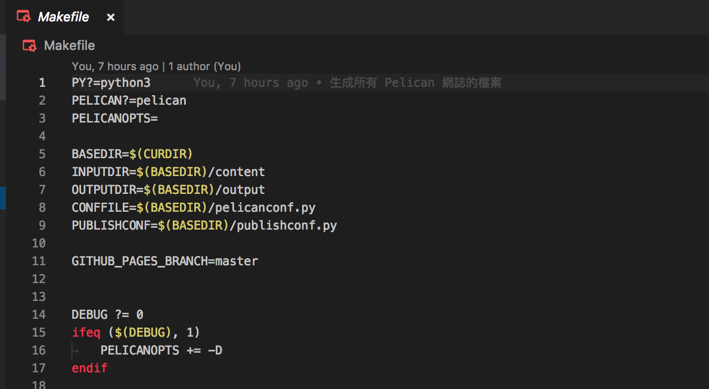</p>
<p>接下來在正式使用 <code>make github</code> 指令前，我們需要先安裝這個 Makefile 在執行 <code>make github</code> 所使用到的一個套件，叫做 <code>ghp-import</code> ，這個套件需要用到 <code>pip</code> 安裝，而因為我使用 Pipenv 所以如下執行：</p>
<div class="highlight"><pre><span></span><code><span class="o">(</span>kokokuo-note<span class="o">)</span>kokokuo-note<span class="o">(</span>develop<span class="o">)</span>&gt; pipenv install ghp-import
</code></pre></div>

<p>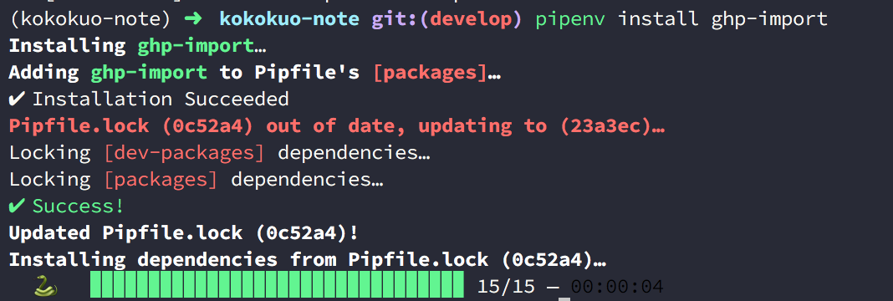</p>
<p>安裝完後我們再次更新 Commit 提交：</p>
<div class="highlight"><pre><span></span><code><span class="o">(</span>kokokuo-note<span class="o">)</span>kokokuo-note<span class="o">(</span>develop<span class="o">)</span>&gt; git add .
<span class="o">(</span>kokokuo-note<span class="o">)</span>kokokuo-note<span class="o">(</span>develop<span class="o">)</span>&gt; git commit -m <span class="s2">&quot;安裝 ghp-import&quot;</span>
</code></pre></div>

<p>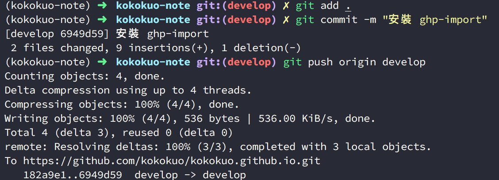</p>
<p>提交完後，我們便可以開始執行 <code>make github</code> ：</p>
<div class="highlight"><pre><span></span><code><span class="o">(</span>kokokuo-note<span class="o">)</span>kokokuo-note<span class="o">(</span>develop<span class="o">)</span>&gt; make github
</code></pre></div>

<p>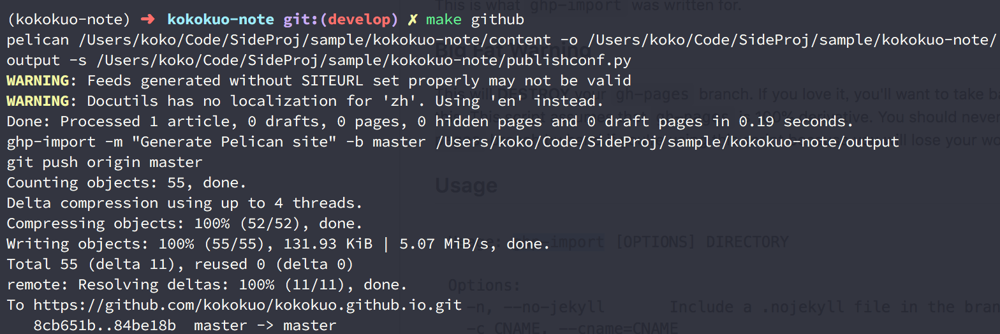</p>
<p>你會看到 <code>make github</code> 以 Makefile 中指定的 <code>master</code> 作為分支參數，自己幫我們把輸出的 <strong>output</strong> 檔案推送到 Makefile 中指定的 <code>master</code> 分支上。</p>
<p>之後切換到 Github Page 的 Repository 查看，如下圖你會看到 <strong>output</strong> 目錄下的 HTML 等靜態檔案都已在此 <code>master</code> 的 Repository 中：</p>
<p>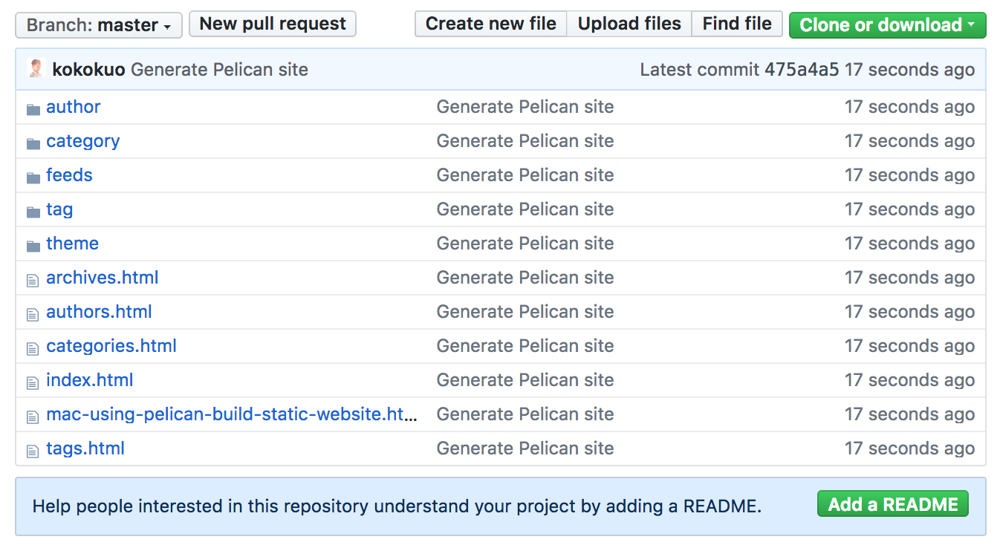</p>
<p>同時輸入網址，會看到我們的網頁內容，例如我是 https://kokokuo.github.io：</p>
<p>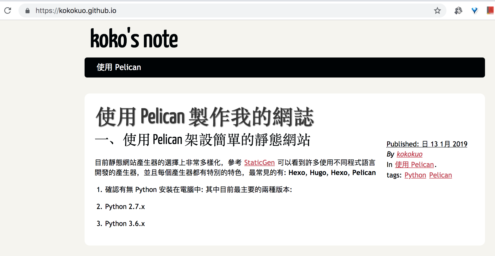</p>
<p>到此大功告成囉！</p>
<p><em>補充：在執行 <code>make github</code> 指令時，會在本機端建立 <code>master</code> 分支並提交推送，如果在 Github Page 的 Repository 有較早推送的檔案，會一併刪除舊檔案請注意。</em></p>
<h1>參考來源</h1>
<hr>
<ol>
<li><a href="https://help.github.com/articles/configuring-a-publishing-source-for-github-pages/">Configuring a publishing source for GitHub Pages</a></li>
<li><a href="https://stackoverflow.com/questions/39978856/unable-to-change-source-branch-in-github-pages">PUBLIC Stack Overflow Tags Users Jobs Teams Q&amp;A for work Learn More Unable to change source branch in GitHub Pages</a></li>
<li><a href="http://chenjiee815.github.io/pelicanru-men-zhi-nan.html">Pelican 入门指南</a></li>
<li><a href="http://www.xycoding.com/articles/2013/11/21/blog-create/">使用 Pelican 和 GitHub Pages 搭建个人博客 —— 基础篇</a></li>
<li><a href="https://docs.getpelican.com/en/stable/content.html">Pelican Tutorial</a></li>
</ol>
  </div>
  <div class="tag-cloud">
    <p>
      <a href="https://note.koko.guru/tag/python">Python</a>
      <a href="https://note.koko.guru/tag/pelican">Pelican</a>
      <a href="https://note.koko.guru/tag/github">Github</a>
      <a href="https://note.koko.guru/tag/static-site">Static Site</a>
    </p>
  </div>


<!-- Disqus -->
<div id="disqus_thread"></div>
<script type="text/javascript">
    var disqus_shortname = 'koko-note';
    (function() {
        var dsq = document.createElement('script'); dsq.type = 'text/javascript'; dsq.async = true;
        dsq.src = '//' + disqus_shortname + '.disqus.com/embed.js';
        (document.getElementsByTagName('head')[0] || document.getElementsByTagName('body')[0]).appendChild(dsq);
    })();
</script>
<noscript>
        Please enable JavaScript to view comments.

</noscript>
<!-- End Disqus -->
</article>

    <footer>
<p>&copy; kokokuo 2019</p>
<p>    Powered by <a href="http://getpelican.com" target="_blank">Pelican</a> - <a href="https://github.com/alexandrevicenzi/flex" target="_blank">Flex</a> theme by <a href="http://alexandrevicenzi.com" target="_blank">Alexandre Vicenzi</a>
</p>    </footer>
  </main>


<script type="application/ld+json">
{
  "@context" : "http://schema.org",
  "@type" : "Blog",
  "name": " koko's Note ",
  "url" : "https://note.koko.guru",
  "image": "/static/koko-logo.png",
  "description": ""
}
</script>

</body>
</html>